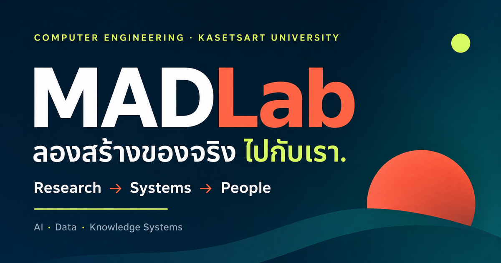

เมื่อจำเป็นต้องทำเว็บแล็บใหม่: MADLab จากงานวิจัย สู่ระบบและผู้คน
{kind=link}

เมื่อแล็บทำงานมานาน คำถามที่ศึกษาและสิ่งที่สร้างย่อมเปลี่ยนไป เว็บไซต์เดิมจึงอาจไม่สามารถอธิบายตัวตนปัจจุบันได้ครบ การทำเว็บใหม่ครั้งนี้เริ่มจากความจำเป็นตรงไปตรงมา: ต้องมีพื้นที่ที่บอกได้ว่า MADLab วันนี้คืออะไร
เว็บไซต์จึงไม่ได้เริ่มจากรายการผลงาน แต่เริ่มจากคำชวนว่า “ลองสร้างของจริงไปกับเรา” และวางแกนของแล็บไว้ชัดเจนว่า Research → Systems → People
จาก Multimedia Analysis and Discovery สู่คำถามที่กว้างขึ้น
MADLab เริ่มต้นจากชื่อ Multimedia Analysis and Discovery Laboratory และสะสมประสบการณ์ด้านการวิเคราะห์และค้นพบมายาวนาน วันนี้ขอบเขตของคำถามขยายไปถึง AI ระบบความรู้ วิทยาศาสตร์เชิงคำนวณ และกระบวนการวิจัยที่ตรวจสอบย้อนกลับถึงหลักฐานได้
ชื่อเดิมยังเป็นรากของตัวตน แต่เว็บไซต์ใหม่ต้องทำให้เห็นว่าแล็บไม่ได้หยุดอยู่กับชนิดข้อมูลหรือเทคนิคหนึ่ง หากกำลังใช้ computation เพื่อทำความเข้าใจโลกหลายด้าน
สามวิธีที่เราใช้ computation เพื่อเข้าใจโลก
ด้านแรกคือ AI สำหรับโลกกายภาพและภาพ ตั้งแต่ฝนเมืองแบบเวลาจริง เครือข่ายตรวจวัด ไปจนถึง computer vision ที่ต้องทำงานกับข้อมูลจริงและข้อจำกัดจริง
ด้านที่สองคือ ความรู้ หลักฐาน และ AI ที่น่าเชื่อถือ ครอบคลุมการจับคู่แนวคิด การตรวจคำตอบกับหลักฐาน การคัดสรรความรู้ และ workflow วิจัยที่ยังย้อนกลับไปตรวจที่มาได้
ด้านที่สามคือ การค้นพบด้วยวิทยาการคำนวณ เช่น จีโนมิกส์ อัลกอริทึมลำดับ DNA และวิธีวิจัยเชิงปริมาณสำหรับคำถามที่ข้อมูลมีความซับซ้อน
งานวิจัยควรเดินทางไปไกลกว่าบทความ
แกน Research → Systems → People สะท้อนวิธีทำงานของแล็บ งานวิจัยไม่ควรจบเพียงการค้นพบหรือการตีพิมพ์ แต่ควรเดินทางต่อไปเป็นระบบ เครื่องมือ หลักสูตร หรือโครงสร้างพื้นฐานที่มีคนใช้และเรียนรู้ต่อได้
เว็บไซต์ปัจจุบันจึงนำเสนอทั้งคำถามวิจัยและสิ่งที่เคยกลายเป็นของจริง ตั้งแต่ KU Urban Decision Intelligence, ระบบข้อมูลวิจัย, งานฝนเมือง ไปจนถึงระบบที่เชื่อมความรู้กับหลักฐาน
เว็บไซต์ของแล็บควรทำให้คนเห็นว่าตนเข้ามามีส่วนร่วมตรงไหน
หน้าเว็บที่ดีไม่ได้มีไว้เพียงยืนยันว่าแล็บมีอยู่ แต่ควรช่วยให้นักศึกษา นักวิจัย และผู้ร่วมงานมองเห็นว่า ที่นี่ให้พื้นที่กับการทดลอง ความผิดพลาด การเรียนรู้ และการสร้างของที่คนใช้จริง
ดังนั้น การทำเว็บแล็บใหม่จึงไม่ใช่เพียงงานออกแบบหน้าเว็บ แต่เป็นการจัดระเบียบและประกาศตัวตนของพื้นที่วิจัย ว่าเราสนใจปัญหาแบบไหน เชื่อในการทำงานแบบใด และอยากเดินทางไปกับใคร
เว็บไซต์ห้องปฏิบัติการ MADLab — AI, Data & Knowledge Systems สำรวจงานวิจัย ระบบ โครงการ การสอน และโอกาสร่วมงานกับแล็บ